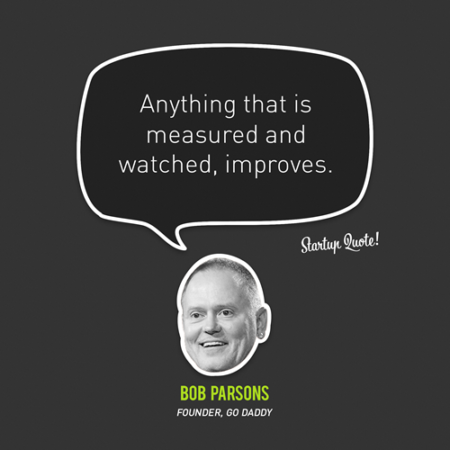

Improves.

I first read this quote a few years back and it is something that I think about regularly.
There is, however, an important caveat. Deciding on what is measured and watched is just as important. Tracking the wrong metric and optimizing for the success of that metric can be catastrophic.
A big part of starting blogging is that it forces me to formalize the things that I am thinking about. Lately, I have been thinking about tracking different personal metrics over a long period of time. The first one I want to track is my happiness.
The happiness tracker is a simple piece of software that I wrote in about an hour this evening. All it does is remind me at the end of each day to answer the question "How happy were you today? (1-10)". Happiness, I decided, is an excellent metric to optimize for.
My answer to that daily question lives here: davidkircos.com/happiness
Eventually, I hope to show the data in a clearer format and potentially ask other questions to myself every day. Or even use this same mechanism to help stay on track for yearly goals
For now, I am just going to track daily happiness. Today was a great day, I spent most of the day relaxing with some close friends I have known for over 5 years. 8/10